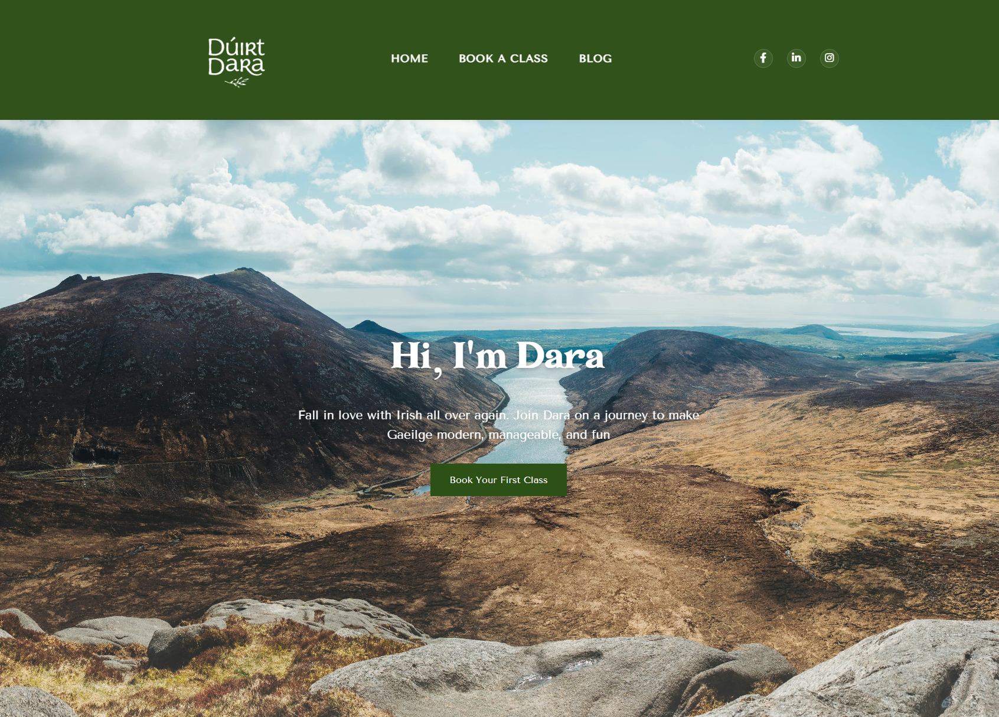

Case Study
Dúirt Dara
A blog website built for my partner — designed around her vision, coded by me.

Overview
This website was made for my partner, Dara. It was designed specifically to her idea of a perfect blog website — a place where she can build a community with her students and give an honest look at what goes on behind the scenes.
The Vision
This project had been in the back of my mind for a long time. Dara had a specific theme she wanted — something that drew from the Mourne Mountains, Co. Armagh; earthy, calm, and genuinely beautiful. Translating that feeling into a web design meant getting the font styling and colouring exactly right, which turned out to be one of the bigger challenges of the build.
Getting the right photographs and making sure they fit the theme of the site was no easy task either. Every image had to earn its place and feel at home within the palette.
Design & Development
I wanted to keep the website simple in nature — a cute, artsy feel that reflects Dara's personality without overcomplicating it. Simple design goes a long way for engagement, and that principle guided every layout decision.
What made this project special was the way it came together. No time constraints, no constant design changes, no stress. We almost worked on it as a pair — Dara designing and choosing the style, me coding. It felt less like a commission and more like a collaboration.
What Made It Different
Building something for someone close to you changes the dynamic entirely. There's a different kind of care that goes into every decision when it's personal. The result is a site I'm genuinely proud of — not just technically, but because it actually captures who Dara is.